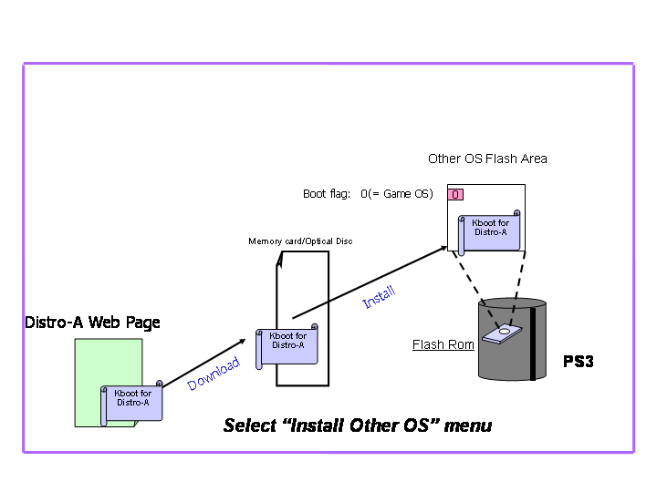

© 2007 Sony Computer Entertainment Inc.
© 2006,2007 Sony Corporation
Permission is granted to copy, distribute and/or modify this document under the terms of the GNU Free Documentation License, Version 1.2 published by the Free Software Foundation; with no Invariant Sections, no Front-Cover Texts, and no Back-Cover Texts. A copy of the license is included in the section entitled "GNU Free Documentation License".
DISCLAIMER
THIS
DOCUMENT IS
PROVIDED "AS IS," AND COPYRIGHT HOLDERS MAKE NO
REPRESENTATIONS OR WARRANTIES, EXPRESS OR IMPLIED, INCLUDING, BUT NOT
LIMITED TO, WARRANTIES OF MERCHANTABILITY, FITNESS FOR A PARTICULAR
PURPOSE, NON-INFRINGEMENT, OR TITLE; THAT THE CONTENTS OF THE
DOCUMENT ARE SUITABLE FOR ANY PURPOSE; NOR THAT THE IMPLEMENTATION OF
SUCH CONTENTS WILL NOT INFRINGE ANY THIRD PARTY PATENTS, COPYRIGHTS,
TRADEMARKS OR OTHER RIGHTS.
COPYRIGHT HOLDERS
WILL NOT BE LIABLE FOR ANY DIRECT, INDIRECT, SPECIAL OR CONSEQUENTIAL
DAMAGES ARISING OUT OF ANY USE OF THE DOCUMENT OR THE PERFORMANCE OR
IMPLEMENTATION OF THE CONTENTS THEREOF.
TRADEMARK NOTICE
"PLAYSTATION" and "PS3" are registered trademarks of Sony Computer
Entertainment Inc. "Cell Broadband Engine" is a trademark of
Sony Computer Entertainment Inc. Linux® is the registered
trademark of Linus Torvalds in the U.S. and other countries.
Other company, product and service names
may be registered trademarks, trademarks or service marks of others.
This document illustrates overview of PS3 Linux boot process and how to install boot loader.
First of all, user needs to initialize built-in HDD. With conventional PC this could be done as part of Linux installation, however with PS3, user need to decide what amount of HDD assign to Linux. Fig. 1 shows it’s concept.
Fig . 1 Disk Partitions
As conventional PC, we need to install a boot loader into PS3 to boot Linux. On the other hand, we need a special program to install a boot loader on special reserved area in PS3 system flash rom. The installer is called as “OtherOS Installer”.
Due to requirements of boot loader on PS3, such as capability of using USB human interface devices, “kboot’ has been utilized as a boot loader for Linux on PS3.
In other words, before staring Linux installation, you need to get customized “kboot” from Linux distributor, respectively. Then you install “kboot” to PS3. Please refer installation manual of Linux distribution, for details.
The customized “kboot” which you installed, may contain corresponding proper installation program for Linux distribution, you choose.
Fig 2. shows overview of Kboot.

Fig 2. Boot Loader
Please find out details of “OtherOS” Flash area in Fig 3. And refer http://www.playstation.com/ps3-openplatform/ also, for up to date information.
Fig. 3 Other OS Flash Area Details
Once you installed “kboot” into PS3. You can switch the environment to be booted with boot selection menu from GameOS. On the other hand, from Linux environment, you also can switch the environment, using "ps3-boot-game-os" command.
Fig. 4 Change Default Boot System
Fig 5 shows details of the algorithm decides which environment to boot.
Fig 5. Boot Flow Chart with Kboot
| 1.4 | Aug 17 2007 | Update copyright |
| 1.3 | Apr 25 2007 | Update copyright and figure |
| 1.1 | Dec 8 2006 | Added "Revision History" and corrected typo |
| 1.0 | Nov 11 2006 | Initial Revision |